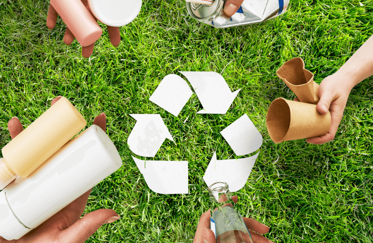
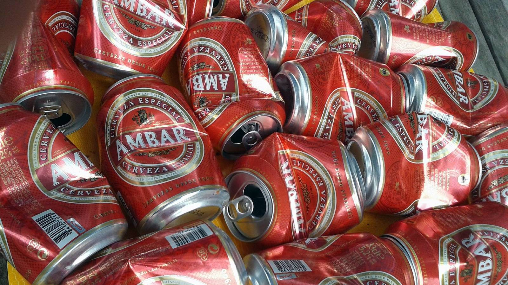
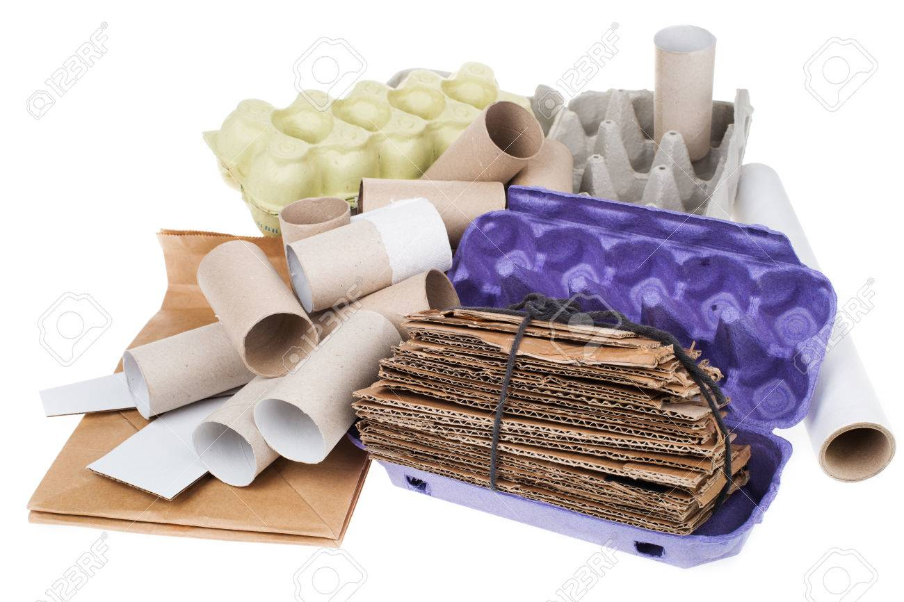
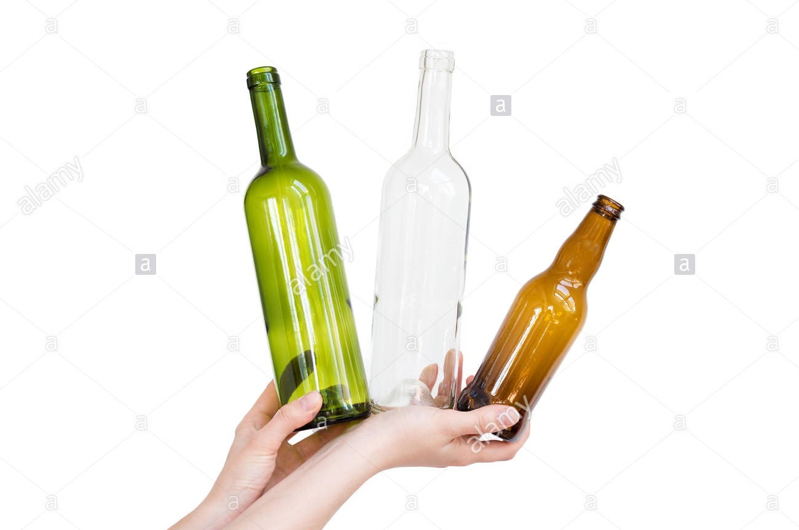
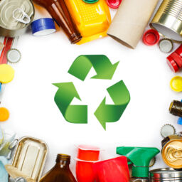
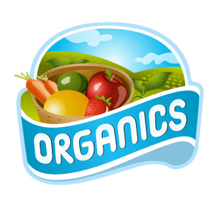
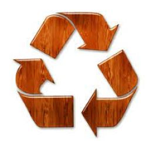
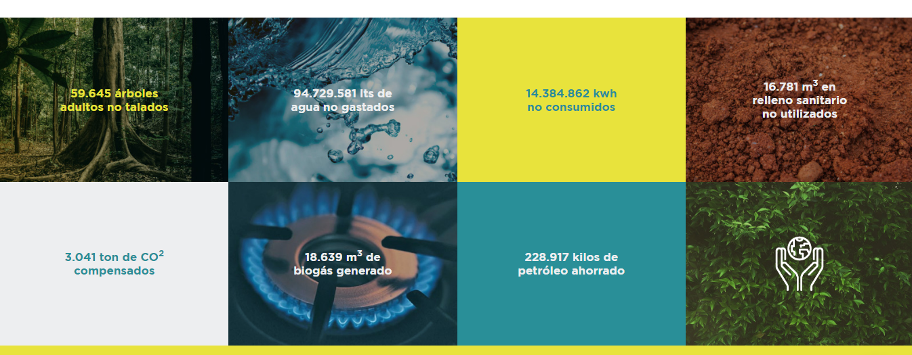

Informe
Codigo Ambiental
Marco Legal
Residuos Electricos
CONVERTIR LOS RESIDUOS
EN RECURSOS REUTILIZABLES
  
CLASIFICACIÓN DE LOS RESIDUOS



EFECTOS SI NO SE RESICLA
ALZA TU VOZ!!!!
Beneficios ambientales
